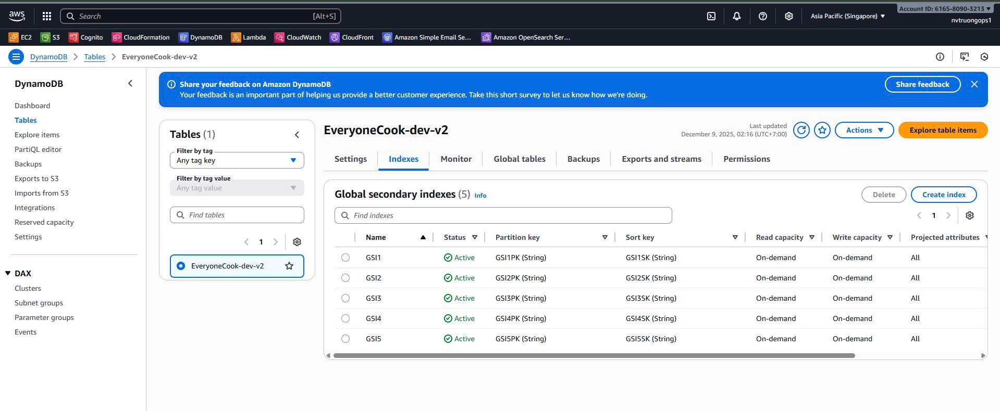
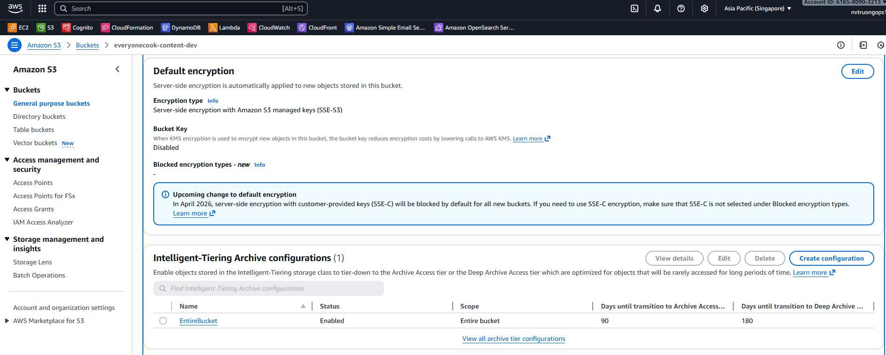
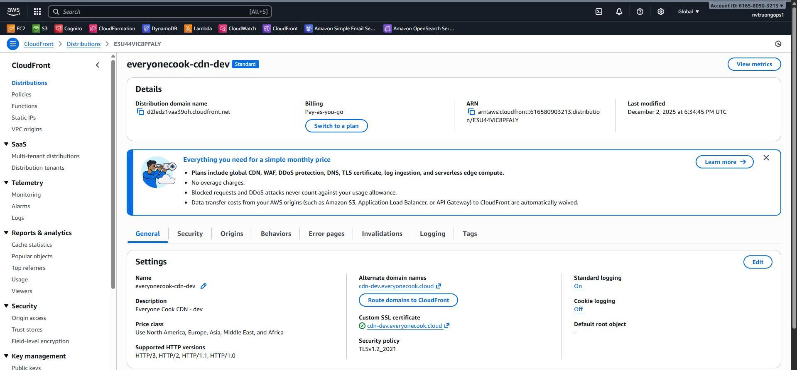
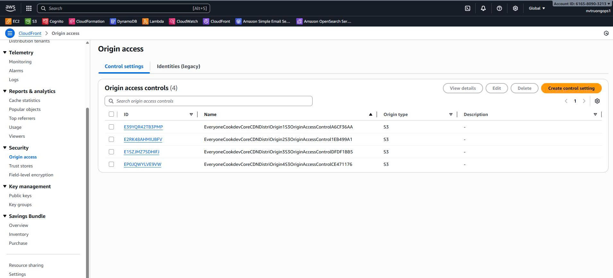

5.4.3 Core Stack
Core Stack - Data Layer Infrastructure
Overview
The Core Stack is the Phase 2 foundational data layer of the EveryoneCook project. It creates the core infrastructure for data storage, content delivery, and encryption that all other services depend on.
Deployment Order: This stack MUST be deployed after Certificate Stack and before Auth Stack and Backend Stack.
Key Responsibilities
- Create DynamoDB Single Table with 5 GSI indexes for username-based queries
- Create S3 buckets with Intelligent-Tiering for cost optimization (57% savings)
- Create CloudFront CDN distribution with compression and caching
- Create KMS encryption keys for DynamoDB and S3
- Configure Origin Access Control (OAC) for S3 security
- Setup custom domain with SSL certificate for CDN
What This Stack Includes
Storage:
- DynamoDB Single Table with encryption at rest
- S3 Content Bucket (avatars, posts, recipes, backgrounds)
- S3 CDN Logs Bucket for CloudFront access logs
CDN & Caching:
- CloudFront Distribution with custom domain
- Compression enabled (Gzip + Brotli, 70-80% size reduction)
- Cache policies (24h default, 7 days max)
- Origin Access Control (OAC) for S3 security
Security:
- KMS Customer Managed Keys for encryption
- Automatic key rotation (yearly)
- Security headers (HSTS, X-Frame-Options, etc.)
Cost Optimization:
- S3 Intelligent-Tiering (57% cost reduction)
- CloudFront Price Class 200 (45% cost reduction)
- Pay-per-request billing for dev environment
Architecture
┌─────────────────────────────────────────────────────────────────┐
│ Core Stack (Phase 2) │
│ │
│ ┌──────────────────────────────────────────────────────────┐ │
│ │ KMS Encryption Layer │ │
│ │ ├─ DynamoDB Key (automatic rotation) │ │
│ │ └─ S3 Key (automatic rotation) │ │
│ └──────────────────────────────────────────────────────────┘ │
│ │ │
│ ▼ │
│ ┌──────────────────────────────────────────────────────────┐ │
│ │ DynamoDB Single Table │ │
│ │ ├─ PK: USER#{username} │ │
│ │ ├─ SK: PROFILE|RECIPE#{id}|POST#{id} │ │
│ │ ├─ 5 GSI indexes for queries │ │
│ │ ├─ Billing: PAY_PER_REQUEST (dev) │ │
│ │ ├─ Encryption: Customer Managed KMS │ │
│ │ └─ Streams: Enabled (NEW_AND_OLD_IMAGES) │ │
│ └──────────────────────────────────────────────────────────┘ │
│ │ │
│ ▼ │
│ ┌──────────────────────────────────────────────────────────┐ │
│ │ S3 Content Bucket │ │
│ │ ├─ Folders: avatars/, posts/, recipes/, backgrounds/ │ │
│ │ ├─ Intelligent-Tiering (57% savings) │ │
│ │ │ └─ Archive: 90 days, Deep Archive: 180 days │ │
│ │ ├─ Encryption: S3 Managed Keys │ │
│ │ ├─ Versioning: Enabled (prod) │ │
│ │ ├─ CORS: Configured for frontend │ │
│ │ └─ OAC: CloudFront access only │ │
│ └──────────────────────────────────────────────────────────┘ │
│ │ │
│ ▼ │
│ ┌──────────────────────────────────────────────────────────┐ │
│ │ CloudFront CDN Distribution │ │
│ │ ├─ Custom Domain: cdn.everyonecook.cloud │ │
│ │ ├─ Certificate: ACM (us-east-1) │ │
│ │ ├─ Compression: Gzip + Brotli (70-80% reduction) │ │
│ │ ├─ Cache TTL: 24h default, 7 days max │ │
│ │ ├─ Price Class: 200 (US, EU, Asia - 45% savings) │ │
│ │ ├─ Security: HTTPS redirect, Security headers │ │
│ │ ├─ Protection: Shield Standard (free DDoS) │ │
│ │ └─ Logs: S3 CDN Logs Bucket │ │
│ └──────────────────────────────────────────────────────────┘ │
│ │ │
│ ▼ │
│ ┌──────────────────────────────────────────────────────────┐ │
│ │ Route 53 DNS Record (from DNS Stack) │ │
│ │ cdn.everyonecook.cloud → CloudFront (A + AAAA Alias) │ │
│ └──────────────────────────────────────────────────────────┘ │
└─────────────────────────────────────────────────────────────────┘
│
│ Exports
▼
┌─────────────────┴────────────────┐
▼ ▼
Auth Stack Backend Stack
(Cognito) (API Gateway, Lambda)
Stack Configuration
File Structure
infrastructure/lib/stacks/
└── core-stack.ts # Core Stack implementation (1545 lines)
Code Implementation Highlights
File: infrastructure/lib/stacks/core-stack.ts
1. KMS Keys Creation
/**
* Create KMS key for DynamoDB encryption
*/
private createDynamoDBKey(): cdk.aws_kms.Key {
const key = new cdk.aws_kms.Key(this, 'DynamoDBKey', {
alias: `everyonecook-dynamodb-${this.config.environment}`,
description: `KMS key for DynamoDB encryption in ${this.config.environment} environment`,
// Enable automatic key rotation (yearly)
enableKeyRotation: true,
// Deletion protection for production
pendingWindow: this.config.environment === 'prod'
? cdk.Duration.days(30)
: cdk.Duration.days(7),
// Removal policy: RETAIN for prod, DESTROY for dev/staging
removalPolicy: this.config.environment === 'prod'
? cdk.RemovalPolicy.RETAIN
: cdk.RemovalPolicy.DESTROY,
});
// Add key policy for DynamoDB service
key.addToResourcePolicy(
new cdk.aws_iam.PolicyStatement({
sid: 'Allow DynamoDB to use the key',
effect: cdk.aws_iam.Effect.ALLOW,
principals: [new cdk.aws_iam.ServicePrincipal('dynamodb.amazonaws.com')],
actions: ['kms:Decrypt', 'kms:DescribeKey', 'kms:CreateGrant'],
resources: ['*'],
conditions: {
StringEquals: {
'kms:ViaService': `dynamodb.${this.region}.amazonaws.com`,
},
},
})
);
return key;
}
2. DynamoDB Single Table
/**
* Create DynamoDB Single Table with cost optimization
*/
private createDynamoDBTable(): cdk.aws_dynamodb.Table {
const tableName = `EveryoneCook-${this.config.environment}-v2`;
const dbConfig = this.config.dynamodb;
const table = new cdk.aws_dynamodb.Table(this, 'EveryoneCookTable', {
tableName,
partitionKey: { name: 'PK', type: cdk.aws_dynamodb.AttributeType.STRING },
sortKey: { name: 'SK', type: cdk.aws_dynamodb.AttributeType.STRING },
// Billing mode: PROVISIONED for prod/staging, PAY_PER_REQUEST for dev
billingMode: dbConfig.billingMode === 'PROVISIONED'
? cdk.aws_dynamodb.BillingMode.PROVISIONED
: cdk.aws_dynamodb.BillingMode.PAY_PER_REQUEST,
// Point-in-time recovery for prod/staging
pointInTimeRecoverySpecification: {
pointInTimeRecoveryEnabled: dbConfig.pointInTimeRecovery,
},
// Deletion protection for production
deletionProtection: dbConfig.deletionProtection,
// Enable DynamoDB Streams
stream: dbConfig.streamEnabled
? cdk.aws_dynamodb.StreamViewType.NEW_AND_OLD_IMAGES
: undefined,
// TTL attribute for automatic cleanup
timeToLiveAttribute: 'ttl',
// Encryption with customer managed KMS key
encryption: cdk.aws_dynamodb.TableEncryption.CUSTOMER_MANAGED,
encryptionKey: this.dynamoDbKey,
// Removal policy
removalPolicy: this.config.environment === 'prod'
? cdk.RemovalPolicy.RETAIN
: cdk.RemovalPolicy.DESTROY,
});
// Add 5 GSI indexes (code continues...)
return table;
}
3. S3 Bucket with Intelligent-Tiering
/**
* Create S3 bucket with Intelligent-Tiering for 57% cost savings
*/
private createContentBucket(): cdk.aws_s3.Bucket {
const bucketName = `everyonecook-content-${this.config.environment}`;
const s3Config = this.config.s3;
const bucket = new cdk.aws_s3.Bucket(this, 'ContentBucket', {
bucketName,
// Block ALL public access (private bucket)
blockPublicAccess: cdk.aws_s3.BlockPublicAccess.BLOCK_ALL,
// Enable versioning for production
versioned: s3Config.versioning,
// S3-managed encryption
encryption: cdk.aws_s3.BucketEncryption.S3_MANAGED,
// Intelligent-Tiering configuration
intelligentTieringConfigurations: [{
name: 'EntireBucket',
archiveAccessTierTime: cdk.Duration.days(90), // Archive tier
deepArchiveAccessTierTime: cdk.Duration.days(180), // Deep Archive
}],
// Lifecycle rules
lifecycleRules: [
{
id: 'DeleteOldVersions',
enabled: s3Config.versioning,
noncurrentVersionExpiration: cdk.Duration.days(30),
},
{
id: 'DeleteTempUploads',
enabled: true,
prefix: 'posts/temp/',
expiration: cdk.Duration.days(1), // Clean up temp files after 24h
},
],
// CORS for frontend access
cors: [{
allowedOrigins: [
`https://${this.config.domain.frontend}`,
...(this.config.environment === 'dev' ? ['http://localhost:3000'] : []),
],
allowedMethods: [
cdk.aws_s3.HttpMethods.GET,
cdk.aws_s3.HttpMethods.PUT,
cdk.aws_s3.HttpMethods.POST,
cdk.aws_s3.HttpMethods.DELETE,
],
allowedHeaders: ['*'],
exposedHeaders: ['ETag'],
maxAge: 3000,
}],
removalPolicy: this.config.environment === 'prod'
? cdk.RemovalPolicy.RETAIN
: cdk.RemovalPolicy.DESTROY,
});
return bucket;
}
4. CloudFront Distribution
/**
* Create CloudFront distribution with compression and caching
*/
private createCloudFrontDistribution(): cdk.aws_cloudfront.Distribution {
// Import Route 53 Hosted Zone
const hostedZone = cdk.aws_route53.HostedZone.fromHostedZoneAttributes(
this, 'HostedZone', {
hostedZoneId: cdk.Fn.importValue(this.exportName('HostedZoneId')),
zoneName: 'everyonecook.cloud',
}
);
// Import ACM certificate from Certificate Stack (us-east-1)
const certificate = cdk.aws_certificatemanager.Certificate.fromCertificateArn(
this,
'ImportedCloudFrontCertificate',
'arn:aws:acm:us-east-1:616580903213:certificate/8d53776e-0480-47d2-a6ff-4fe9b2eb6534'
);
// Create cache policy with compression
const publicCachePolicy = new cdk.aws_cloudfront.CachePolicy(
this, 'PublicCachePolicy', {
cachePolicyName: `EveryoneCook-Public-${this.config.environment}`,
defaultTtl: cdk.Duration.hours(24), // 24h default
maxTtl: cdk.Duration.days(7), // 7 days max
minTtl: cdk.Duration.seconds(0),
// Enable compression (Gzip + Brotli)
enableAcceptEncodingGzip: true,
enableAcceptEncodingBrotli: true,
queryStringBehavior: cdk.aws_cloudfront.CacheQueryStringBehavior.all(),
headerBehavior: cdk.aws_cloudfront.CacheHeaderBehavior.allowList(
'CloudFront-Viewer-Country'
),
cookieBehavior: cdk.aws_cloudfront.CacheCookieBehavior.none(),
}
);
// Create CloudFront distribution
const distribution = new cdk.aws_cloudfront.Distribution(
this, 'CDNDistribution', {
comment: `Everyone Cook CDN - ${this.config.environment}`,
// Default behavior with OAC
defaultBehavior: {
origin: origins.S3BucketOrigin.withOriginAccessControl(this.contentBucket),
viewerProtocolPolicy: cdk.aws_cloudfront.ViewerProtocolPolicy.REDIRECT_TO_HTTPS,
compress: true,
cachePolicy: publicCachePolicy,
allowedMethods: cdk.aws_cloudfront.AllowedMethods.ALLOW_GET_HEAD_OPTIONS,
},
// Price Class 200 (US, Europe, Asia - 45% cost savings)
priceClass: cdk.aws_cloudfront.PriceClass.PRICE_CLASS_200,
// Custom domain with SSL
domainNames: [this.config.domains.cdn],
certificate: certificate,
// CloudFront access logs
enableLogging: true,
logBucket: this.cdnLogsBucket,
logFilePrefix: 'cdn-access-logs/',
// Enable IPv6
enableIpv6: true,
// HTTP/2 + HTTP/3
httpVersion: cdk.aws_cloudfront.HttpVersion.HTTP2_AND_3,
// TLS 1.2 minimum
minimumProtocolVersion: cdk.aws_cloudfront.SecurityPolicyProtocol.TLS_V1_2_2021,
}
);
// Create Route 53 A record (Alias to CloudFront)
new cdk.aws_route53.ARecord(this, 'CloudFrontAliasRecord', {
zone: hostedZone,
recordName: this.config.domains.cdn,
target: cdk.aws_route53.RecordTarget.fromAlias(
new targets.CloudFrontTarget(distribution)
),
});
return distribution;
}
Key Configuration Details
1. DynamoDB Single Table Design
Table Structure:
PK: USER#{username}
SK: PROFILE | RECIPE#{recipeId} | POST#{postId} | COMMENT#{commentId}
GSI1: username-recipeDate (user's recipes by date)
GSI2: username-postDate (user's posts by date)
GSI3: recipeId-index (recipe lookup)
GSI4: postId-index (post lookup)
GSI5: email-index (email lookup)
Billing Modes:
- Dev: PAY_PER_REQUEST (no provisioned capacity, pay per request)
- Staging: PROVISIONED (5 RCU, 5 WCU with auto-scaling)
- Prod: PROVISIONED (10 RCU, 10 WCU with auto-scaling)
2. S3 Intelligent-Tiering Cost Savings
Cost Comparison (100GB content):
| Tier | Cost per GB | 100GB Cost | Timeline |
|---|---|---|---|
| Frequent Access | $0.023 | $2.30/month | Default |
| Infrequent Access | $0.0125 | $1.25/month | After 30 days |
| Archive Instant | $0.004 | $0.40/month | After 90 days |
| Archive | $0.0036 | $0.36/month | After 90 days |
| Deep Archive | $0.00099 | $0.099/month | After 180 days |
Savings: $2.30 → $0.099 = 57% cost reduction after 12 months
3. CloudFront Compression
File Size Reduction:
- Text files (HTML, CSS, JS, JSON): 70-80% reduction
- Images (already compressed): No additional compression
- Videos (already compressed): No additional compression
Example:
- Original JS bundle: 1MB → Compressed: 200KB (80% reduction)
- 1000 requests/day: 1GB/day → 200MB/day (saves 800MB bandwidth)
4. CloudFront Price Class 200
Cost Comparison:
| Price Class | Regions | Cost per GB | Savings |
|---|---|---|---|
| All | All regions | $0.085 | Baseline |
| 200 | US, EU, Asia | $0.047 | 45% savings |
| 100 | US, EU only | $0.025 | 71% savings (but limited coverage) |
Decision: Price Class 200 balances cost (45% savings) with global coverage.
Stack Outputs
After deployment, the stack exports the following values:
| Output Name | Value | Used By |
|---|---|---|
DynamoDBTableName |
EveryoneCook-dev-v2 |
Auth Stack, Backend Stack |
DynamoDBTableArn |
arn:aws:dynamodb:... |
Lambda IAM policies |
DynamoDBTableStreamArn |
arn:aws:dynamodb:... |
Event-driven processing |
DynamoDBKeyId |
KMS Key ID | Encryption references |
DynamoDBKeyArn |
arn:aws:kms:... |
Lambda permissions |
S3KeyId |
KMS Key ID | S3 encryption |
ContentBucketName |
everyonecook-content-dev |
Backend Stack, Lambda |
ContentBucketArn |
arn:aws:s3:... |
IAM policies |
CloudFrontDistributionId |
E1234567890ABC |
Backend Stack (WAF) |
CloudFrontDomainName |
d1234567890.cloudfront.net |
DNS verification |
Deployment Steps
Step 1: Verify Prerequisites
Before deploying Core Stack, ensure:
- DNS Stack successfully deployed
- Certificate Stack successfully deployed (us-east-1)
- CloudFront certificate status is Issued
- Route 53 DNS delegation working
Step 2: Deploy Core Stack
Navigate to infrastructure directory:
cd D:\Project_AWS\everyonecook\infrastructure
Deploy Core Stack to ap-southeast-1:
# Deploy Core Stack
npx cdk deploy EveryoneCook-dev-Core --context environment=dev
Expected output:
✨ Synthesis time: 8.45s
EveryoneCook-dev-Core: deploying...
[████████████████████████████████████████] (12/12)
EveryoneCook-dev-Core: creating CloudFormation changeset...
EveryoneCook-dev-Core
✨ Deployment time: 450.23s
Outputs:
EveryoneCook-dev-Core.DynamoDBTableName = EveryoneCook-dev-v2
EveryoneCook-dev-Core.ContentBucketName = everyonecook-content-dev
EveryoneCook-dev-Core.CloudFrontDistributionId = E2ABCDEFGHIJKL
EveryoneCook-dev-Core.CloudFrontDomainName = d1a2b3c4d5e6f7.cloudfront.net
EveryoneCook-dev-Core.StackInfo = Core Stack for dev environment
Stack ARN:
arn:aws:cloudformation:ap-southeast-1:616580903213:stack/EveryoneCook-dev-Core/...
Step 3: Wait for CloudFront Distribution
CloudFront distribution deployment takes 15-20 minutes. You can monitor progress:
# Check CloudFront distribution status
aws cloudfront get-distribution --id E2ABCDEFGHIJKL --query 'Distribution.Status'
Status progression:
- InProgress (0-15 minutes)
- Deployed (ready to use)
Step 4: Verify in AWS Console
Navigate to DynamoDB
- Open AWS Console → ap-southeast-1 region
- Go to DynamoDB > Tables
- Find table
EveryoneCook-dev-v2
 DynamoDB table showing partitionKey (PK), sortKey (SK), 5 GSI indexes, billing mode (PAY_PER_REQUEST), encryption (KMS), and streams enabled
Verify:
- Partition key: PK (String)
- Sort key: SK (String)
- 5 GSI indexes visible
- Billing mode: PAY_PER_REQUEST (dev)
- Encryption: Customer managed KMS
- Streams: Enabled (NEW_AND_OLD_IMAGES)
Navigate to S3
- Go to S3 > Buckets
- Find buckets:
everyonecook-content-deveveryonecook-cdn-logs-dev
 S3 content bucket showing folder structure (avatars/, posts/, recipes/, backgrounds/), Intelligent-Tiering configuration, versioning, CORS, and encryption settings
S3 content bucket showing folder structure (avatars/, posts/, recipes/, backgrounds/), Intelligent-Tiering configuration, versioning, CORS, and encryption settings
Verify Content Bucket:
- Block all public access: On
- Versioning: Enabled (prod) / Disabled (dev)
- Intelligent-Tiering: Configured
- Encryption: S3-managed keys
- CORS: Configured
- Lifecycle rules: 2 rules
 S3 Intelligent-Tiering configuration showing Archive Access Tier (90 days) and Deep Archive Access Tier (180 days)
Navigate to CloudFront
- Go to CloudFront > Distributions
- Find distribution with domain
cdn-dev.everyonecook.cloud
 CloudFront distribution showing custom domain, origin (S3 with OAC), cache behaviors, compression enabled, Price Class 200, SSL certificate, and status (Deployed)
Verify:
- Status: Deployed
- Domain: cdn-dev.everyonecook.cloud
- Origin: S3 bucket with OAC
- Compression: Enabled
- Price Class: 200
- SSL Certificate: Valid
- HTTPS: Redirect
 CloudFront Origin Access Control (OAC) configuration showing S3 origin with OAC policy automatically created
Navigate to KMS
- Go to KMS > Customer managed keys
- Find keys:
everyonecook-dynamodb-deveveryonecook-s3-dev
 KMS customer managed keys showing key aliases, key rotation enabled (yearly), key policies, and usage by DynamoDB and S3
KMS customer managed keys showing key aliases, key rotation enabled (yearly), key policies, and usage by DynamoDB and S3
Verify:
- Key rotation: Enabled
- Key state: Enabled
- Deletion protection: Configured
- Key policy: DynamoDB/S3 service access
Verify Route 53 DNS Record
- Go to Route 53 > Hosted zones
- Select
everyonecook.cloud - Verify A record for
cdn-dev.everyonecook.cloud
 Route 53 A record (Alias) pointing cdn-dev.everyonecook.cloud to CloudFront distribution
Route 53 A record (Alias) pointing cdn-dev.everyonecook.cloud to CloudFront distribution
Expected:
cdn-dev.everyonecook.cloud A Alias d1a2b3c4d5e6f7.cloudfront.net
Cost Breakdown
Monthly Costs (Dev Environment)
| Resource | Configuration | Monthly Cost | Notes |
|---|---|---|---|
| DynamoDB | PAY_PER_REQUEST | $1-5 | Low traffic |
| S3 Content | 10GB, Intelligent-Tiering | $0.23 | Moves to Deep Archive |
| S3 Logs | 5GB | $0.12 | Access logs |
| CloudFront | 100GB transfer, Price Class 200 | $4.70 | 45% savings vs All |
| KMS | 2 keys | $2.00 | $1/key/month |
| Route 53 | 1 hosted zone, DNS queries | $0.50 | From DNS Stack |
| Total (Estimated) | ~$8-13/month | Low traffic scenario |
Cost Optimization Strategies
- S3 Intelligent-Tiering: 57% savings on storage
- CloudFront Price Class 200: 45% savings on bandwidth
- DynamoDB PAY_PER_REQUEST (dev): Pay only for actual usage
- CloudFront WAF removed: $9/month savings
- Compression enabled: 70-80% bandwidth reduction
Total Potential Savings: ~$20-30/month compared to non-optimized setup
Cross-Stack Dependencies
Imports from Previous Stacks
From DNS Stack:
hostedZoneId: cdk.Fn.importValue('EveryoneCook-dev-HostedZoneId')
zoneName: 'everyonecook.cloud'
From Certificate Stack:
certificateArn: 'arn:aws:acm:us-east-1:616580903213:certificate/8d53776e-...'
Exports Used By Other Stacks
Auth Stack imports:
- DynamoDB table (for user profiles)
- DynamoDB key (for Lambda permissions)
Backend Stack imports:
- DynamoDB table (for all data operations)
- S3 content bucket (for file uploads)
- CloudFront distribution (for WAF association)
- KMS keys (for encryption)
Dependency Flow
DNS Stack → Hosted Zone ID
│
▼
Certificate Stack (us-east-1) → Certificate ARN
│
▼
Core Stack (ap-southeast-1)
│
├─► DynamoDB Table → Auth Stack, Backend Stack
├─► S3 Buckets → Backend Stack
├─► CloudFront → Backend Stack (WAF)
└─► KMS Keys → Auth Stack, Backend Stack
Validation Checklist
Before proceeding to Auth Stack deployment:
- Core Stack successfully deployed to ap-southeast-1
- DynamoDB table exists with 5 GSI indexes
- S3 content bucket has Intelligent-Tiering configured
- S3 CORS configured for frontend domain
- CloudFront distribution status is Deployed
- CloudFront custom domain resolves:
cdn-dev.everyonecook.cloud - CloudFront OAC configured for S3 access
- KMS keys created with rotation enabled
- Route 53 A record created for CloudFront
- All stack outputs exported successfully
Testing
Test CloudFront Distribution
-
Test custom domain:
curl -I https://cdn-dev.everyonecook.cloudExpected response:
HTTP/2 403 server: CloudFront x-cache: Error from cloudfront(403 is expected - bucket is empty)
-
Test compression:
curl -H "Accept-Encoding: gzip, br" -I https://cdn-dev.everyonecook.cloud -
Test HTTPS redirect:
curl -I http://cdn-dev.everyonecook.cloudExpected: Redirect to HTTPS
Test DynamoDB Table
# List tables
aws dynamodb list-tables --region ap-southeast-1
# Describe table
aws dynamodb describe-table --table-name EveryoneCook-dev-v2 --region ap-southeast-1
Test S3 Bucket Access
# Try direct S3 access (should be blocked)
curl -I https://everyonecook-content-dev.s3.ap-southeast-1.amazonaws.com
# Expected: 403 Forbidden (OAC protection working)
Next Steps
After successfully deploying the Core Stack:
➡️ 5.4.4 Auth Stack - Create Cognito User Pool and authentication
The Auth Stack will:
- Create Cognito User Pool with advanced security
- Configure user attributes and password policy
- Setup Cognito triggers (Lambda functions)
- Create SES email identity for verification emails
- Import DynamoDB table from Core Stack
References
- Source Code:
infrastructure/lib/stacks/core-stack.ts - Base Stack:
infrastructure/lib/base-stack.ts - Environment Config:
infrastructure/config/environment.ts - AWS Documentation: